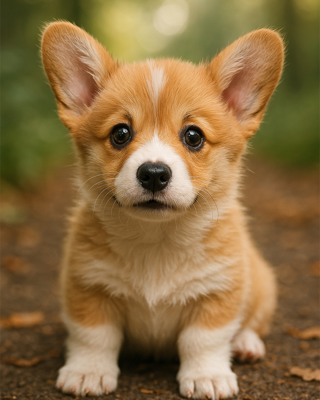

html5 학습
나의 소개
- 이름:유성열
- 별명:레나스나
- 관심기술:Ai모든것을 배우기 100% 활용하기
- 취미:Ai 기술 모두 써보기
처음으로 웹으로 올려본 Ai 그림과 동영상
| 좋아하는것 |
Ai |
| 취미 생활 |
Ai 가지고 놀기 |
| 기술 |
Ai 부려먹기 |
| 목표 |
Ai 기술 100% 활용하기 |
Ai 를 이용한 강아지 사용한 이미지 모델 chatGpt40
Ai를 이용한 강아지 동여상 모델 klingai.com 을 이용한 동영상
Ai랑 노는것은 즐겁습니다

음원 추출 영상만 있는 동영상 입니다.
영상만 있으면 뭔가 심심하겠죠? 강아지 소리만 만들은 강아지 동영상 입니다.
Ai에서 뽑은 이미지를 동영상으로 만들기